News Archive, 2006
 Conference on Devotional Expressions of South Asian Muslims
Conference on Devotional Expressions of South Asian Muslims December 2006
The IIS hosted a conference on Devotional Expressions of South Asian Muslims from 16-18 November at the Ismaili Centre in London. Scholars from diverse academic and cultural backgrounds presented new research on South Asian Muslims from historical and contemporary perspectives. Professor Azim Nanji, in his introductory remarks, highlighted the diversity and range of Muslim experience in South Asia. More
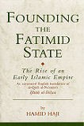New IIS Publication on the Rise of the Fatimid State
November 2006
Founding the Fatimid State: The Rise of an Early Islamic Empire by Hamid Haji is the first complete translation into English of Iftitah al-da‘wa (Commencement of the Mission) by al-Qadi al-Nu‘man, who was one of the most important exponents of Fatimid jurisprudence and an official historian of the Fatimid caliphate. This publication provides interesting insights into the social and political conditions at the time when the Fatimids began their rule. More
November 2006
Founding the Fatimid State: The Rise of an Early Islamic Empire by Hamid Haji is the first complete translation into English of Iftitah al-da‘wa (Commencement of the Mission) by al-Qadi al-Nu‘man, who was one of the most important exponents of Fatimid jurisprudence and an official historian of the Fatimid caliphate. This publication provides interesting insights into the social and political conditions at the time when the Fatimids began their rule. More
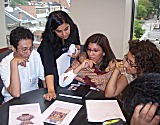IIS Conducts Summer Programme on Islam at McGill University
November 2006
The IIS Summer Programme on Islam was held in August 2006 at McGill University’s campus, in the heart of Montreal, Canada. The participants from Syria, Afghanistan, Pakistan, India, Tajikistan, United Kingdom, Switzerland, Russia, United Sates and Canada brought a mélange of cultural and social backgrounds to the discussions and seminars of the programme. More
November 2006
The IIS Summer Programme on Islam was held in August 2006 at McGill University’s campus, in the heart of Montreal, Canada. The participants from Syria, Afghanistan, Pakistan, India, Tajikistan, United Kingdom, Switzerland, Russia, United Sates and Canada brought a mélange of cultural and social backgrounds to the discussions and seminars of the programme. More
 The IIS Welcomes Class of 2009
The IIS Welcomes Class of 2009 October 2006
The IIS accepted 11 new students into its Graduate Programme in Islamic Studies and Humanities (GPISH) this year. The Class of 2009, comprising students from Canada, India, Iran, Pakistan, Portugal, Tajikistan and the USA, will embark on an intensive two-year multi-disciplinary study of the faith, culture, language and thought of Muslim societies. More
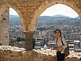Class of 2008 Complete Arabic Immersion Programme in Damascus
October 2006
The Class of 2008 spent four weeks in Damascus this summer completing an Arabic immersion program, an integral part of the Institute’s Graduate Program in Islamic Studies and Humanities. The course provided an important opportunity to put to practical use the Arabic language skills gained by students in their first year. More
October 2006
The Class of 2008 spent four weeks in Damascus this summer completing an Arabic immersion program, an integral part of the Institute’s Graduate Program in Islamic Studies and Humanities. The course provided an important opportunity to put to practical use the Arabic language skills gained by students in their first year. More
 In Memoriam: Dr Duncan Haldane: 1947-2006
In Memoriam: Dr Duncan Haldane: 1947-2006 September 2006
Dr Duncan Haldane, who passed away on 22nd August, 2006 was the Head Librarian & Curator at The Institute of Ismaili Studies from 1997 to 2004. Representatives from the Institute joined Dr Haldane’s family at a service of thanksgiving held on 4th September at All Saints’ Church, Putney Common. More
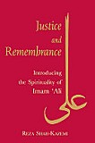New Publication Introducing the Spirituality of Imam ‘Ali
September 2006
Justice and Remembrance; Introducing the Spirituality of Imam ‘Ali by Reza Shah- Kazemi is a new publication of the Institute which examines the thoughts and teachings of the first Shi‘a Imam, ‘Ali b. Abi Talib, as a spiritual, moral, ethical and political leader. It provides the first serious study on Imam ‘Ali’s teachings in a Western language. More
September 2006
Justice and Remembrance; Introducing the Spirituality of Imam ‘Ali by Reza Shah- Kazemi is a new publication of the Institute which examines the thoughts and teachings of the first Shi‘a Imam, ‘Ali b. Abi Talib, as a spiritual, moral, ethical and political leader. It provides the first serious study on Imam ‘Ali’s teachings in a Western language. More
Professor Ormsby speaks about Muslim Architecture
September 2006
On June 24, Professor Eric Ormsby, Chief Librarian of The Institute of Ismaili Studies, spoke on a selection of images of Muslim Architecture at the Victoria and Albert Museum in London. The talk was part of an architecture week special event, the V& A and RIBA Study Rooms Open Day, which is part of an ongoing initiative of the museum entitled ‘Alternating Currents: Dialogues in Islamic Architecture’. More
September 2006
On June 24, Professor Eric Ormsby, Chief Librarian of The Institute of Ismaili Studies, spoke on a selection of images of Muslim Architecture at the Victoria and Albert Museum in London. The talk was part of an architecture week special event, the V& A and RIBA Study Rooms Open Day, which is part of an ongoing initiative of the museum entitled ‘Alternating Currents: Dialogues in Islamic Architecture’. More
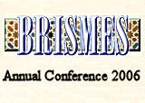IIS Scholars Present Papers at BRISMES 2006
August 2006
Hosted by The Centre for the Study of Islam and Christian-Muslim Relations in Birmingham from 23-26 July, the theme of this year’s BRISMES conference was “Faith, Politics, and Society in the Middle East”. Papers were presented at the conference by Dr Alnoor Dhanani, Dr Ali Qutbuddin, and Salman Alibhai, all of whom are affiliated with the IIS. More
August 2006
Hosted by The Centre for the Study of Islam and Christian-Muslim Relations in Birmingham from 23-26 July, the theme of this year’s BRISMES conference was “Faith, Politics, and Society in the Middle East”. Papers were presented at the conference by Dr Alnoor Dhanani, Dr Ali Qutbuddin, and Salman Alibhai, all of whom are affiliated with the IIS. More
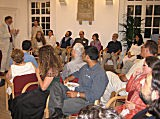IIS Contributes to Workshop on The Esoteric Interpretation of the Qur’an
August 2006
The European Science Foundation (ESF) hosted an exploratory workshop entitled The Esoteric Interpretation of the Qur’an at the University of Cambridge during 17-20 July. The four-day workshop, organized and convened by Dr Annabel Keeler, was jointly funded by the IIS and ESF. The IIS was represented at the workshop by Dr Daftary, Dr Ali Qutbuddin, Dr Feras Hamza, Dr Toby Mayer and Dr Omar Alí-de-Unzaga. More
August 2006
The European Science Foundation (ESF) hosted an exploratory workshop entitled The Esoteric Interpretation of the Qur’an at the University of Cambridge during 17-20 July. The four-day workshop, organized and convened by Dr Annabel Keeler, was jointly funded by the IIS and ESF. The IIS was represented at the workshop by Dr Daftary, Dr Ali Qutbuddin, Dr Feras Hamza, Dr Toby Mayer and Dr Omar Alí-de-Unzaga. More
IIS Scholars and Students Present Papers at WOCMES-2
August 2006
The Second World Congress for Middle Eastern Studies (WOCMES-2), hosted by the Royal Institute for Inter-Faith Studies in Amman, Jordan on 11-16 June 2006, brought together scholars from diverse fields within the humanities and social sciences from around the world to exchange research and ideas. Among the 1,250 presentations, there were papers by 3 individuals affiliated with The Institute of Ismaili Studies (IIS) – Dr Ali Qutbuddin, Yahia Bayza and Sabrina A. Bandali. More
August 2006
The Second World Congress for Middle Eastern Studies (WOCMES-2), hosted by the Royal Institute for Inter-Faith Studies in Amman, Jordan on 11-16 June 2006, brought together scholars from diverse fields within the humanities and social sciences from around the world to exchange research and ideas. Among the 1,250 presentations, there were papers by 3 individuals affiliated with The Institute of Ismaili Studies (IIS) – Dr Ali Qutbuddin, Yahia Bayza and Sabrina A. Bandali. More
 New Publication Explores Medieval Ismaili History and Thought
New Publication Explores Medieval Ismaili History and Thought August 2006
Ismailis in Medieval Muslim Societies is a collection of previously published essays by Dr Farhad Daftary that examine various aspects of Ismaili history and thought in medieval times. It also includes a previously unpublished essay on “The Ismailis and Ismaili Studies”. The relatively brief and eminently accessible articles are intended to make this research available to readers who are not specialists in this field of study. More
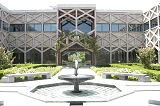Academic Seminar for IIS Alumni held in Portugal
July 2006
From 23rd-26th June, thirty-one IIS alumni from ten countries traveled to Lisbon, Portugal to participate in academic seminar on Trends in Contemporary Muslim Thought. This seminar is part of an ongoing initiative by the Institute to provide continuing education opportunities for its graduates. More
July 2006
From 23rd-26th June, thirty-one IIS alumni from ten countries traveled to Lisbon, Portugal to participate in academic seminar on Trends in Contemporary Muslim Thought. This seminar is part of an ongoing initiative by the Institute to provide continuing education opportunities for its graduates. More
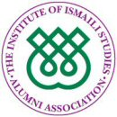IIS launches new website dedicated to its Alumni
July 2006
On 14th July 2006, the IIS launched a new website to enable greater collaboration with its graduates as well as to provide an arena where alumni-specific news, information, highlights and personal achievements are posted and can be viewed by the entire alumni community and other interested users. More
July 2006
On 14th July 2006, the IIS launched a new website to enable greater collaboration with its graduates as well as to provide an arena where alumni-specific news, information, highlights and personal achievements are posted and can be viewed by the entire alumni community and other interested users. More
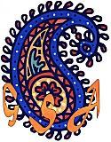Professor Nanji Delivers Keynote Address at Gujarat Studies Association Conference
June 2006
“The underlying principle is that we’re all engaged in an endeavour to build intellectual traditions” shared Professor Azim Nanji, at the first Biennial Gujarat Studies Association (GSA) Conference, held at the School of Oriental and African Studies (SOAS), London, on May 19-20, 2006. He spoke to scholars and interested individuals from around the world on the topic of “Gujarati Studies: A Heritage and its Futures”. More
June 2006
“The underlying principle is that we’re all engaged in an endeavour to build intellectual traditions” shared Professor Azim Nanji, at the first Biennial Gujarat Studies Association (GSA) Conference, held at the School of Oriental and African Studies (SOAS), London, on May 19-20, 2006. He spoke to scholars and interested individuals from around the world on the topic of “Gujarati Studies: A Heritage and its Futures”. More
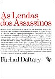The Assassin Legends translated into Portuguese
June 2006
As Lendas dos Assassinos, a Portuguese translation of The Assassin Legends: Myths of the Ismailis, was launched recently in Lisbon. The author, Dr Farhad Daftary, participated in the proceedings. This first Portuguese book in the field of Ismaili Studies provides an introduction to the history of the Ismailis and unravels the Assassin Legends after centuries of misrepresentation. More
June 2006
As Lendas dos Assassinos, a Portuguese translation of The Assassin Legends: Myths of the Ismailis, was launched recently in Lisbon. The author, Dr Farhad Daftary, participated in the proceedings. This first Portuguese book in the field of Ismaili Studies provides an introduction to the history of the Ismailis and unravels the Assassin Legends after centuries of misrepresentation. More
IIS Director Speaks at Pontifical Institute
June 2006
The Pontificio Instituto di Studi Arabi E d’Islamistica (PISAI) in Rome, which is part of the Vatican’s initiative to promote study, research and a better understanding of the Muslim world and Muslim-Christian relations, organises annually the Bradley Conference, to which a Muslim scholar is invited to deliver a presentation. This year, the guest speaker was the Director of The Institute of Ismaili Studies, Professor Azim Nanji. More
June 2006
The Pontificio Instituto di Studi Arabi E d’Islamistica (PISAI) in Rome, which is part of the Vatican’s initiative to promote study, research and a better understanding of the Muslim world and Muslim-Christian relations, organises annually the Bradley Conference, to which a Muslim scholar is invited to deliver a presentation. This year, the guest speaker was the Director of The Institute of Ismaili Studies, Professor Azim Nanji. More
 IIS Launches Syrian Preparatory Programme in Damascus
IIS Launches Syrian Preparatory Programme in Damascus May 2006
On May 9th, twenty students in Damascus, Syria began an intensive nine-month programme, a collaborative endeavour between The Institute of Ismaili Studies and the local Ismaili community institutions. The Syrian Preparatory Programme was established for the purpose of developing human resource capacity in Syria. The programme is being conducted by the British Council, which is implementing a curriculum devised by the Department of Graduate Studies. More
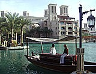IIS Establishes Asian Chapter Group of its Alumni Association
May 2006
IIS Alumni from East Africa, Hong Kong, India, Iran, Pakistan, Syria and the Sudan came together for the first meeting of the Asian Chapter Group of the IIS Alumni Association. The meeting was held in Dubai, UEA, on 22nd April. Members of the Institute’s senior management were also in attendance. More
May 2006
IIS Alumni from East Africa, Hong Kong, India, Iran, Pakistan, Syria and the Sudan came together for the first meeting of the Asian Chapter Group of the IIS Alumni Association. The meeting was held in Dubai, UEA, on 22nd April. Members of the Institute’s senior management were also in attendance. More
 IIS Students Present Paper at International Conference in UAE
IIS Students Present Paper at International Conference in UAE May 2006
Two students from the Institute’s Graduate Programme in Islamic Studies and Humanities presented at the second international Women as Global Leaders Conference hosted by Zayed University, Abu Dhabi, UAE from March 12-14. Sehreen Noor Ali and Farrah Musani presented a paper entitled “Ismaili Muslim Women as Public Leaders in Canadian Government and Politics” as part of a panel on women and political participation. More
 IIS Students Visit Museums in Paris
IIS Students Visit Museums in Paris April 2006
Students of the Institute’s Graduate Programme, accompanied by Head of Graduate Studies, Dr Alnoor Dhanani, were in Paris on March 17-18 to visit two museum exhibitions. The theme of the exhibitions complimented their graduate courses on Islamic history, providing an opportunity to expand their investigation and learning of the Muslim World - its civilisations, contributions and values. More
 Class of 2007 Visits the Alhambra and the Great Mosque of Cordoba
Class of 2007 Visits the Alhambra and the Great Mosque of Cordoba March 2006
Students from the Class of 2007 of the Institute’s Graduate Programme in Islamic Studies and Humanities traveled to Spain in February to visit some of the monuments they had studied in their Islamic Architecture course. The course, taught by Dr Thalia Kennedy, explores the forms, functions, and themes found in the architecture of Muslim societies. More
 Professor Baffioni speaks at the Institute on the Rasa’il Ikhwan al-Safa’
Professor Baffioni speaks at the Institute on the Rasa’il Ikhwan al-Safa’ March 2006
Professor Carmela Baffioni presented a lecture on Prophecy, Imamate and Sapiential Rule in the Ikhwan al-Safa' at the Institute on February 23rd. As part of its programmatic endeavours, the Institute sponsors seminars, conferences and public lectures that examine various facets of Islamic studies and themes of relevance to contemporary Muslim societies. More
 Class of 2008 Visits Museums in Oxford
Class of 2008 Visits Museums in Oxford March 2006
Students from the class of 2008 of the Institute’s Graduate Programme in Islamic Studies and Humanities visited the Ashmolean Museum and the Pitt Rivers Museum at the University of Oxford as part of their course on the Anthropology of Islam. Taught by Dr Zulfikar Hirji, the course introduces students to the discipline of anthropology and explores the diversity of Islam. More
 Gateways
Gateways